Snow Creek Wall Outer Space
- Remorse/Outer Space (5.9, III)
- April, 2004
“Watch me here, Peter,” I said. I had clipped a well-fixed Red Alien cam about 7 feet down and right of me, and was committing to moving left across a steep slab with polished nubbins for feet. I consider myself lucky in that I’ll always find a 5.8 move scary on lead. Still, I knew any fall would be clean and the gear would hold. After a few moves I reached a creaky flake of granite and exhaled carefully. “Whoo! That was interesting!” I could sense Peter’s relief!
We were on the second pitch of the “Remorse” start to “Outer Space.” Our plans had come together the night before, and before we knew it we were balancing across the log approach to Snow Creek Wall. There was a new log across the river, a much better one than last year. As we racked up at the base, we were amazed to have the wall to ourselves.
Jeff Smoot described the danger of overcrowding on the wall chillingly: a pair of Canadian climbers had fallen years ago because all the belay anchors were stocked with waiting climbers (From his site at http://www.climbingwashington.com/classics/outerspace.htm).
We wouldn’t see anyone all day, that is, aside from dozens of ticks and mountain goats!
I continued left for 30 more feet, getting an object lesson in traverses. After the undercling flakes of granite, there were more slabby moves for the feet and semi-desperate groping for fingerlocks in old pin scars. Next, a set of rounded handholds a good ways out from my last gear. After each little test, there was a decent protection opportunity, which kept the pitch fun. Finally I passed a shrub with faded rappel slings, and built a gear anchor on a large ledge. Settling in to relax, I re-imagined the pitch as Peter climbed. Two years before (man how time flies) we had come out to climb Orbit together, but rainy weather kept us near the road. Peter and Kim bought a house last year, and it’s been hard to find time to climb together. Against conventional wisdom, a spur-of-the-moment plan allowed it to happen - we were glad.
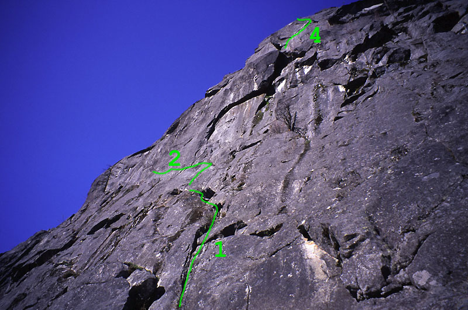
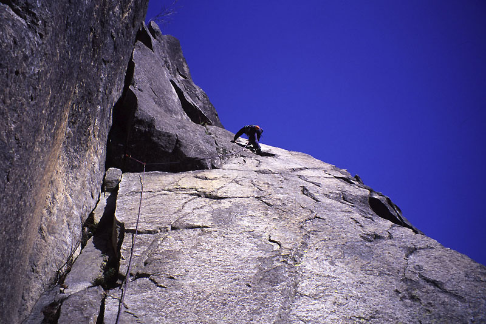
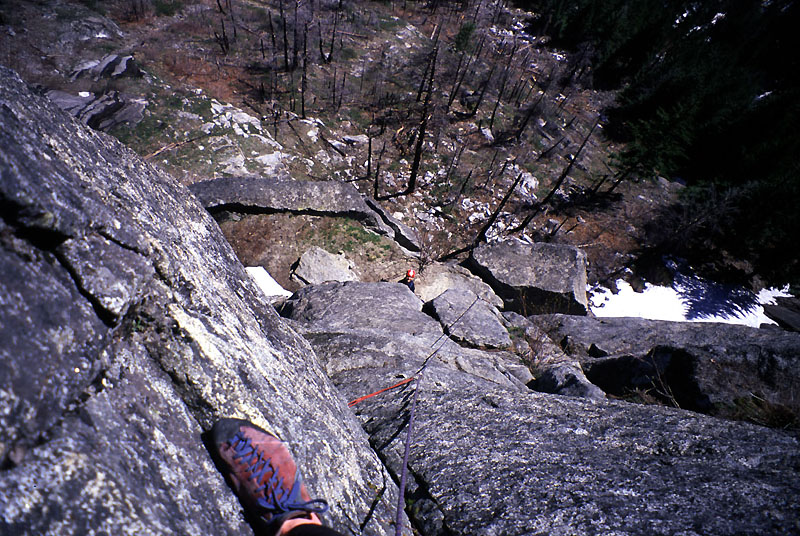
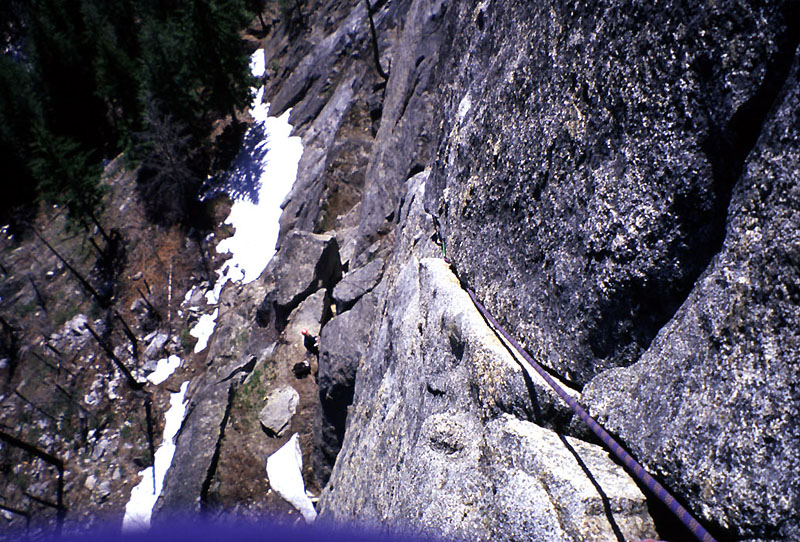
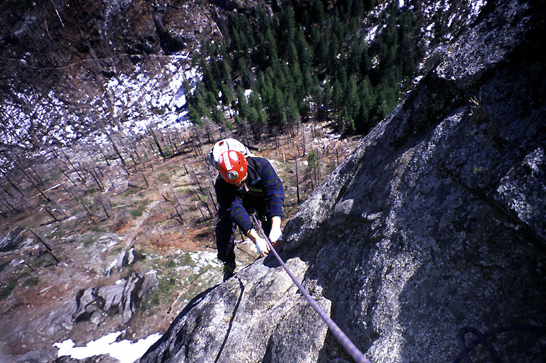
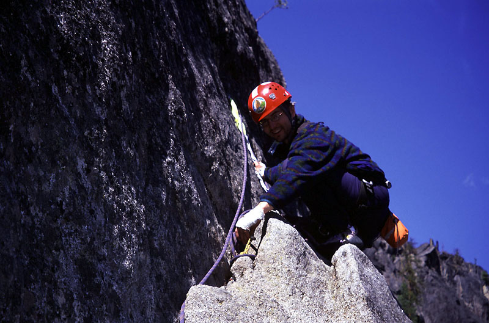
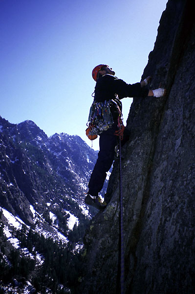
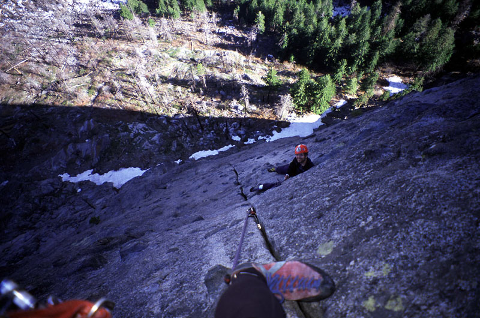
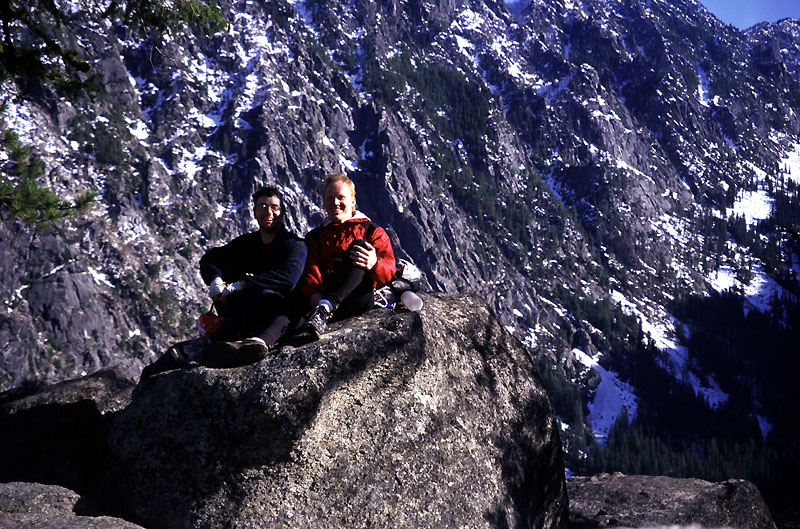
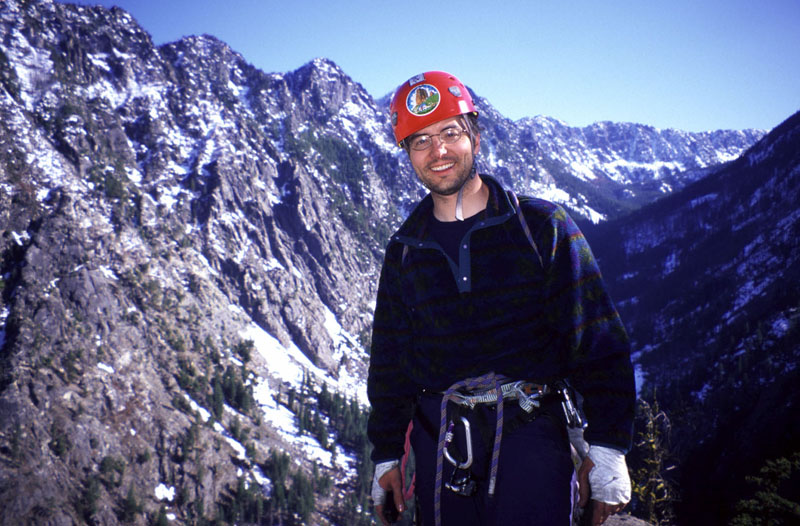
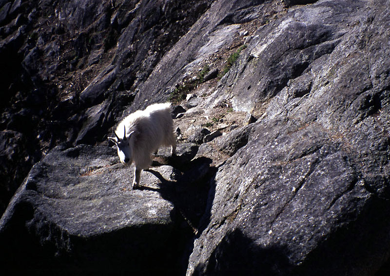
Now Peter was heading up to “Two Tree Ledge,” that fabled platform. Too often had we read and wondered about it, knowing all about how “one tree may have died,” and that ticks lived there in large numbers during Spring. He eschewed a flaring chimney for a slab with a hand crack, then continued out of sight to a series of cracks and corners. I removed my two-nut-and-cam anchor and followed the enjoyable pitch.
Once on the ledge, we faced the crux of the route, a 5.9 rightward traverse. The moves right off the deck were tricky, then very easy for about 30 feet. I reached a corner and started up a slab with a crack for hands and feet. After placing a cam in a flaring pod, I had to go around a corner with a dramatic view 300 feet down to the ground. My urge to procrastinate was strong, so I spent some time here fiddling with gear. I moved by inches for a time, then swung into strenuous moves, my feet near my hands as I crabbed along, first with hands in a crack, then pinching a fortuitous thin granite flake. “What if this breaks?” I thought. I came to a fixed piton, clipping it while alternating feet to rest tiring calf muscles. Time to move again, this time with hand jams or fingerlocks up and right. I don’t remember any single foothold on this traverse, I know they kept some of the weight off my arms, but never felt secure. Finally I reached the end of the traverse, and made an interesting climb up ledges and pin scars straight up and around a corner. At an obvious tree belay, I placed some gear and said “Wow.”
Peter came up quietly and quickly. He had been menaced by ticks below, they crawled up the rope to him, they nestled in his hair, they jumped eagerly from a nearby bush to his dark sweater. He still managed words of admiration for my lead which I ate up. “Really, you thought it was hard?” I said. “I thought I was just weak and scared!”
He took off to reach the base of the fabled 300-foot-long Shield crack. As I belayed, I noticed he left some ticks with me. As Peter said later “I don’t mind, y’know, bacteria parasites in my stomach, because I can’t see them. But ticks, burrowing their head into your skin - that bothers me in a real way.” The sun went around a corner and I got cold. Happy to be climbing back into the sun, I followed this really fun pitch up slabs and ledges with the occasional “chickenhead” hold. A few strenuous layback moves near the end got me to the pedestal Peter belayed from - the proverbial “catbird seat.” We moved down the other side onto a ledge at the start of the Great Crack. Lunchtime. Watching the birds circle below. Taking pictures. Killing ticks.
I was going to lead the last pitch, so it was Peter’s lead again. He started up an awesome face with those chickenhead holds. 10 feet up, he joined the crack. It was fun to watch him, because the climbing didn’t feel very strenuous, but it looked really steep from my point of view. He continued for 150 feet, really enjoying the climbing and taking his time. I haven’t asked him, but that’s gotta be his favorite pitch. When I climbed it, I kept thinking “wow, this is awesome.” My feet were kind of sore, so I tried to avoid much foot jamming. It was easy to do on this crack, because of numerous chickenheads and ledges nearby.
At “Library Ledge,” Peter passed the gear to me for the last pitch. He had already placed an equalized nut and a cam in the finger crack as part of his belay anchor, so I just had to figure out how to get up on the face and keep following the crack. After some delicate moves, I stood on a nubbin and blindly placed a nut in the crack. A few more finger jams got me up to a fixed nut which I clipped. Soon, the crack widened for hand jams, and I could relax. “Whoa, that was harder than the ‘crux’ pitch,” I hollered to Peter. Now I could race up the hand crack, which was angled lower than the previous pitch. I ran the rope out, protecting at the base of steeper bulges. Some of the chickenheads made things shamefully easy. Nearly out of rope, I belayed at a dead-schrub-and-gear anchor. Peter spent a long while trying to clean the fixed nut, before remembering that it was fixed hard. There had been several stuck nuts and hexes, especially on the previous pitch, mostly too deep in the crack to clip. After continuing up large chickenheads to the top of the wall, I belayed Peter, and we exclaimed over the great climbing “Outer Space” had provided. We had made a leisurely day of it, not rushed by our own ambition or anyone else. A family of goats came up to meet us halfway as we descended in late afternoon. We marvelled at the baby goat scampering up a 60 degree moss-covered slab that we’d hesitate to top-rope. It had been three years since I descended, so I easily missed the clues to go left to the base of the “Orbit” route, instead leading us down a deadfall-choked gully, then a faint trail climbing back up to the base of the wall. “Sorry about that!”
Hiking away, we craned our necks to look up at the wall. A beer at Gustav’s capped our triumph, and we planned future climbs, like the South Face of Prusik Peak, and Sleese. Thanks to Peter for this great day!